Скаут
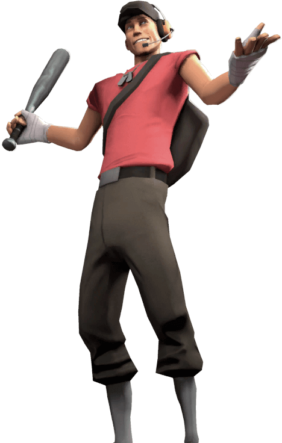
"Травка зеленеет, солнышко блестит, птички поют, а я, брат? Я делаю людям больно. Тебе бы туда, куда я вырос,
ты бы быстро откинул копыта"
- Скаут, видео "Встречайте: Скаут".
Скаут - младший из восьми братьев, выросших на южной окраине Бостона. С малых лет учился решать проблемы
кулаками. С семью старшими братьями за спиной, он привык доводить драки до конца, прежде чем гадёнышам удавалось
скрыться. Как же он научился быстро бегать? Да просто он бегал всегда и ото всех, пока за него не впрягалась
оголтелая свора родных братьев.
Игра за скаута основывается на принципе салок: подбеги, ударь, убеги. Такой стиль сформирован его самой
высокой скоростью в игре и своим главным оружием – обрезом (нечто дробовика). Этот класс должен быть в постоянном
движении, т.к. его максимальное здоровье равно 125 единицам, которые, к сравнению, можно снять двумя ракетами.
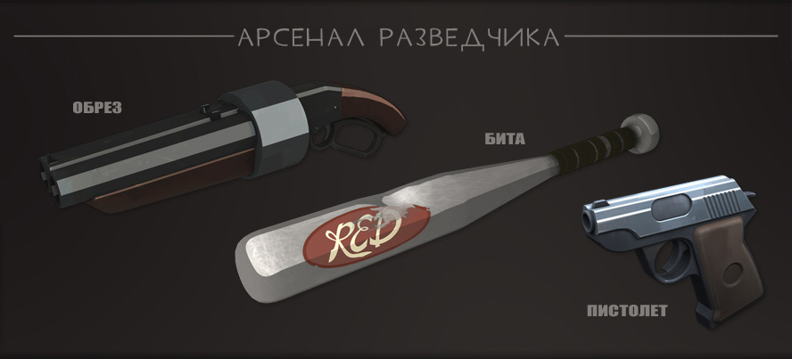
Солдат
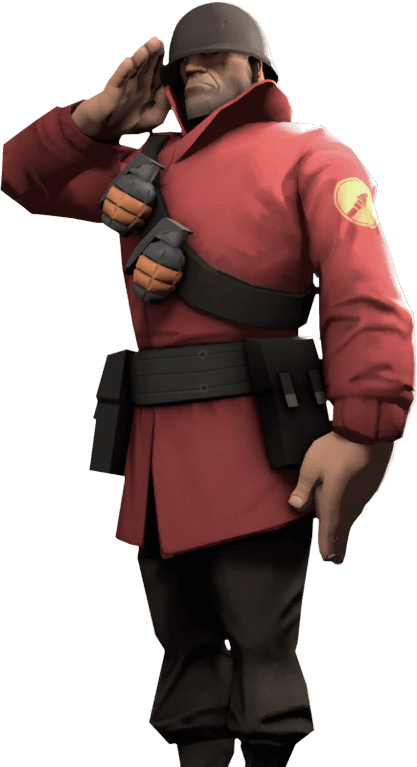
«Война как партия в шахматы: без кишок не обойтись! А вместо шахматных фигур — кровожадные психи, обожающие войны!»
- Солдат, реплика при старте соревновательного матча.
Солдат, родом из Среднего Запада, США – ярый вояка. Однако отчаянное желание участвовать во Второй мировой
войне не помогло, и он получил отказ во всех подразделениях Вооружeнных сил США. Тогда он самостоятельно
отправился в Европу. После приезда и размещения в Польше, он самостоятельно обучился заряжать и стрелять
из любого вида оружия. Затем запоем истреблял нацистов — за что и был награждeн несколькими медалями, которые
сам же и сделал. Правда, пыл угас, как только он услышал, что война закончилась в 1945 году, а в то время
на дворе шeл 1949...
Солдат вооружен ракетометом, который ставит его на место одних из самых мобильных классов. «Рокетджампы»
- дословно «прыжки на взрывчатке» - позволяют ему быстро перемещаться по полю битвы, особенно если экипированы
Штурмботики – предмет, заменяющий дробовик и снижающий урон от рокетджампов.
Ракеты требуют время, чтобы достичь цели. Поэтому основная тактика солдата – держаться на средней дистанции
от врага и стрелять на опережение в ноги. Ракеты имеют ощутимо широкий радиус взрыва, поэтому пытаться сделать
прямое попадание смыла нет.
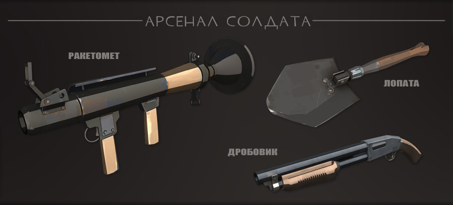
Поджигатель
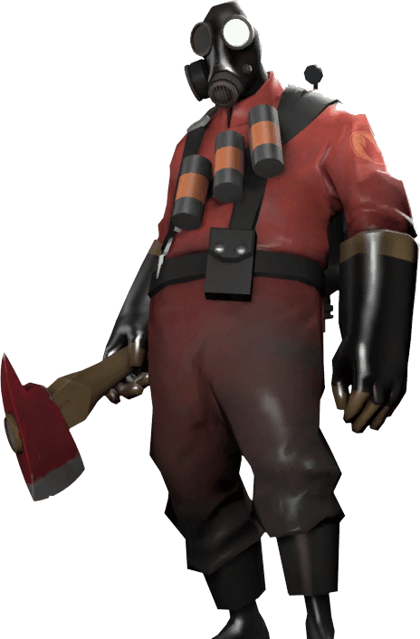
«Лишь тени могут вообразить всю его бесчеловечность, что скрывается за его максой, все ужасы, что скрывает его разум…»
- Шпион о поджигателе, видео «Встречайте: Поджигатель».
О поджигателе известны лишь две вещи: он поджигает вещи и не разговаривает. Хотя наверняка утверждать можно
только о поджоге. Некоторые считают, что редкие непонятные звуки, издаваемые им, являются попыткой общения
сквозь противогаз и разъеденные запахом жженой резины его костюма легкие. В любом случае, он — зловещий огненный
монстр. Если он вообще человек.
Огнемет поджигателя действует на довольно короткой дистанции, поэтому его основная тактика – внезапная атака
из-за угла. Подпустив поджигателя к себе слишком близко, вы сокращаете свои шансы на выживание до минимума,
поэтому лучше от него держаться на расстоянии - тогда он практически беспомощен.
Поджигатель также может тушить союзников и отражать вражеские снаряды (ракеты, гранаты, бомбы-липучки, стрелы
и т.д.) с помощью воздуха из своего болона с газом огнемета, или «Сжатого воздуха», который потребляет десятую
часть общего запаса газа.
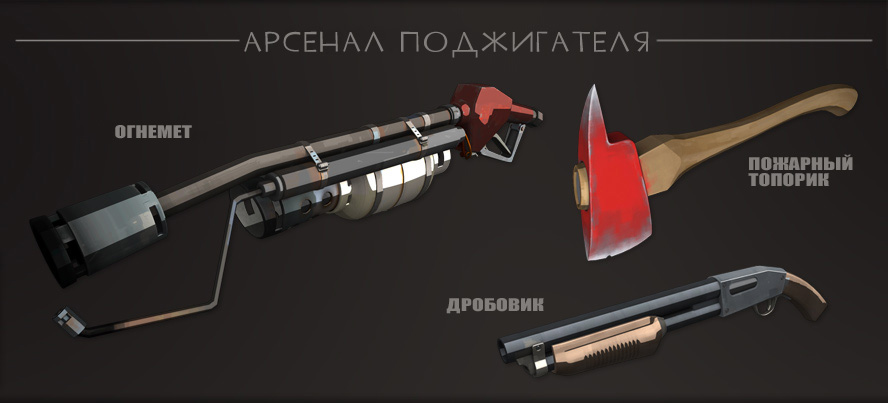
Подрывник
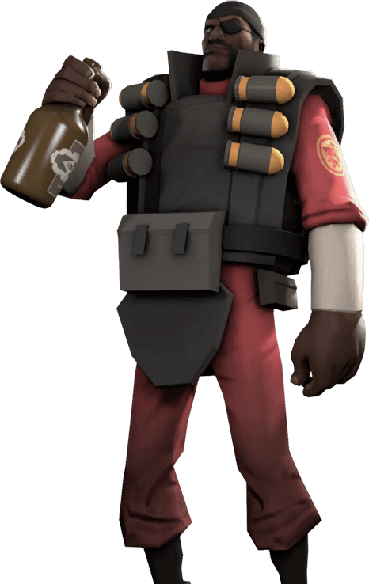
«Я вам так скажу: ах вы такие гордые, такие самоуверенные, пялитесь на все своими тупыми шарами, приходите и получите свое!
Уж я вас встречу ароматом старой доброй серы, я – блин, черная кровавая сказка, с нереально печальным
концом!»
- Подрывник, видео «Встречайте: Подрывник».
Подлый характер, непреодолимая тяга к взрывчатым веществам и сумасшедший план уничтожения Лох-несского чудовища
стоил шестилетнему Подрывнику обоих приёмных родителей. Позже, в школе-интернате, недалеко от Аллапула в
шотландских высокогорьях, его изучение подрывного дела переросло в паранойю, и закончилось печально. Но ведь
нрав и количество целых глаз не показатель, не так ли?
Подрывник, в отличии от остальных классов, использует свое основное и второстепенное оружие – гранатомет
и липучкомет соответственно - одновременно часто. Первое хорошо для «закидывания» врага снарядами в коридорах
и узких проходах, а второе позволяет легко наносить большой урон по группам врагов на открытой местности
и делать ловушки, т.к. бомбы-липучки, в отличии от снарядов гранатомета, не катятся по поверхности и мгновенно
взрываются с помощью детонатора.
Подрывник в правильных руках – самый мобильный класс в игре. Он, аналогично солдату, может делать прыжки
на взрывчатке – «Стикиджампы». С помощью бомбы-липучки можно прыгать на большие расстояние. Правда это отнимает
много здоровья, поэтому подрывник должен знать расположения всех аптечек на карте.
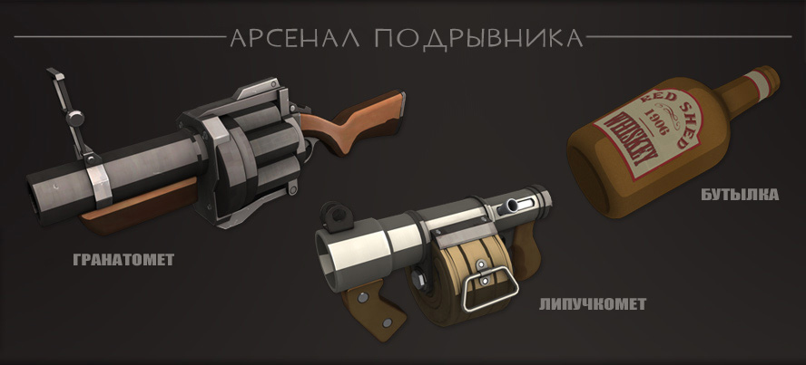
Пулеметчик
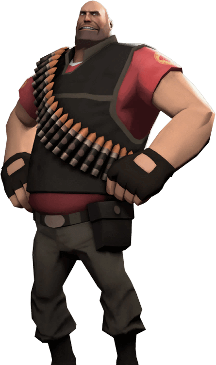
"Я - Пулеметчик, а это - моя пушка. Она весит 150 килограмм и делает 10.000 выстрелов в минуту полями по $200 каждая. Нужно
$400.000 чтобы стрелять из этого пулемета 12 секунд..."
- Пулеметчик, из видео "Встречайте: Пулеметчик".
Пулеметчик – здоровяк из Сибири, не сильно желающий общаться о своем прошлом. Как зимующий медведь, он выглядит
смирным гигантом. Так же как и медведь, сбивающий с толку своей неторопливостью, в таком же состоянии он
спокойно порвет тебя на мелкие кусочки. Несмотря на то, что он медленно говорит и двигается с экономией энергии,
он всегда застигает врасплох. Пулеметчик не болван, он не твой лучший друг, и он, как правило, желает, чтобы
ты поскорее заткнулся, прежде чем он сам заставит тебя это сделать.
Этот класс – символ игры. Обычно персонажи-танки в других шутерах не наносят много урона, однако разработчики
TF2 наделили Пулеметчика не только самым высоким уровнем здоровья, но и самым большим постоянным уроном.
Такую силищу компенсирует самая низкая скорость в игре и размеры модели, которую ну очень сложно не заметить.
Как и Поджигатель, Пулеметчик старается не выходить на особо открытые территории, где его может с легкостью
убить снайпер. Его пулемет имеет ощутимый разброс, что тоже делает его бессильным на широкой местности.
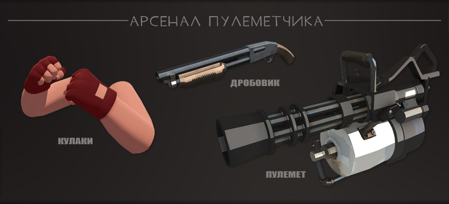
Инженер
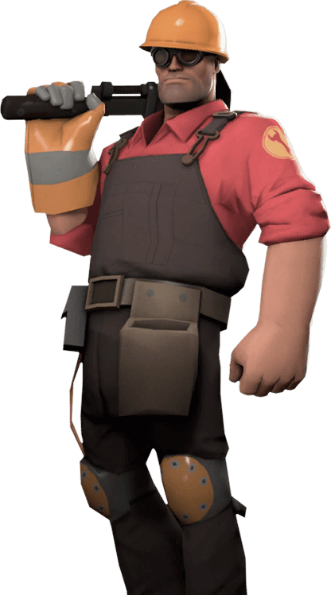
«Слушай, парень. Я – Инженер, а значит умею решать проблемы. Не проблемы типа «что есть добро», потому что в этом разбираются
философы. Я решаю практические проблемы»
- Инженер, видео «Встречайте: Инженер».
Этот любезный, тихий, добрый друг родом из крошечного городка пчеловодов где-то в Техасе ценит три вещи:
хорошее пиво, большие стволы и высшее образование. Врождённое любопытство, десять лет в качестве разнорабочего
на нефтескважинах в восточном Техасе и одиннадцать докторских степеней по сложным наукам обучили его разрабатывать,
строить и ремонтировать различные смертоносные постройки.
Инженер – чистый класс-защитник. За метал он может делать 3 улучшаемые устройства: самонаводящуюся турель,
раздатчик и телепорт. Турель с каждым уровнем наносит больше урона, раздатчик быстрее лечит союзников и раздает
больше боезапасов и металла, а телепорт быстрее перезаряжается между использованиями. Всего инженер имеет
200 единиц метала, которые он может получить из коробок с боезапасом и остатков разрушенного устройства.
Каждое улучшение устройства на 1 уровень требует полный запас метала. Также, им можно чинить поврежденные
устройства.
Главные враги инженера – подрывник и шпион. Первый может из-за угла накидать гранат, а второй ставит жучки
на устройства, которые отключают их и постепенно уничтожают.
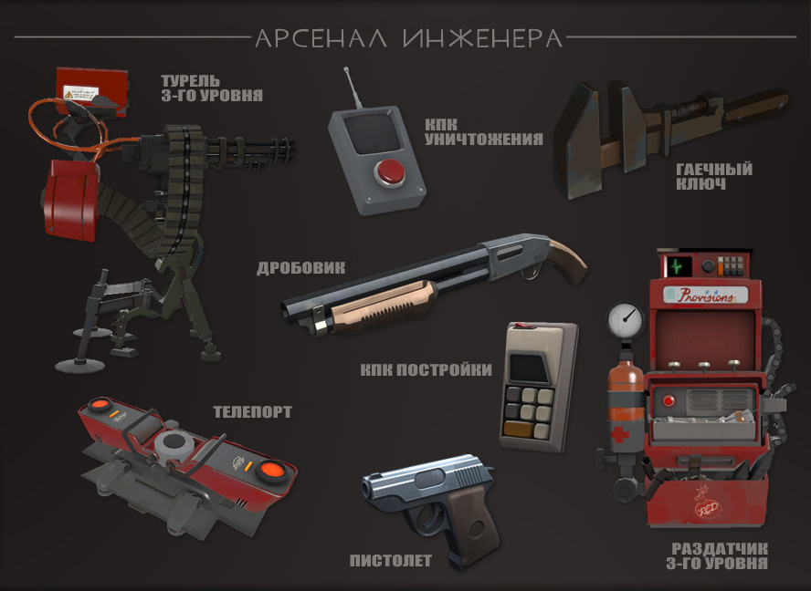
Медик
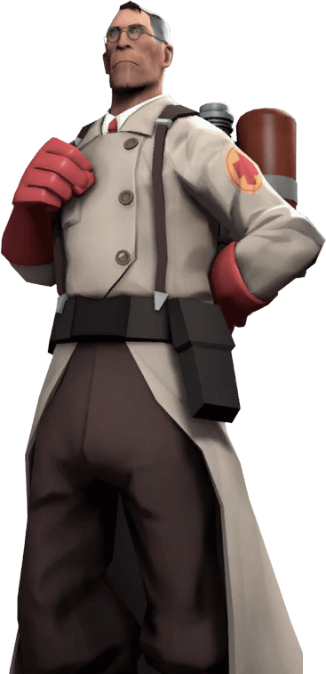
«…Это еще не все: пациент просыпается и понимает, что его скелет пропал, а доктора и след простыл! *смех* В общем, так я лишился врачебной лицензии…»
- Медик, видео «Встречайте: Медик».
Недостаток сострадания к больному, уважения человеческого достоинства и целого ряда элементарных медицинских навыков он компенсирует неограниченным количеством больших игл и неудержимым энтузиазмом, с которым он погружает их в подвернувшуюся плоть. Выросший в Штутгарте, в эру, когда клятва Гиппократа была простой формальностью, медик видел лечение только как незапланированный побочный эффект от удовлетворения своего болезненного любопытства.
Медик – наиважнейшее звено в команде. Его наличие сразу повышает шансы на победу на четверть, т.к. , как ни крути, надежный передвижной источник здоровья дает большой перевес в пользу команды.
Медик лечит команду с помощью своей «Мед-пушки», которая действует на расстоянии и не требует прицеливания. По мере лечения накапливается «убер-заряд» - способность, активирование которой дает медику и его пациенту какой-либо временный эффект – убер-заряд.
Эффект зависит от выбранной мед-пушки: критзкриг дает 100% шанс критических ударов пациенту, быстроправ начинает лечить медика и пациента с огромной скоростью, а заряд мед-пушки по умолчанию дает неуязвимость. Каждый эффект хорош для своей ситуации, но чаще всего используется убер-заряд, дающий неуязвимость. При его активации, в отличии от других, уничтожить медика и его пациента невозможно (не учитывая возможность сбросить со скалы). Хороший игрок, при виде медика под убер-зарядом, сразу даст дёру, так как бороться с неуязвимым противником бессмысленно. Это делает мед-пушку с неуязвимостью самой универсальной и полезной.
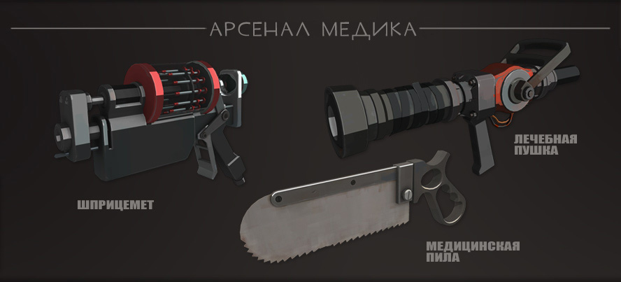
Снайпер
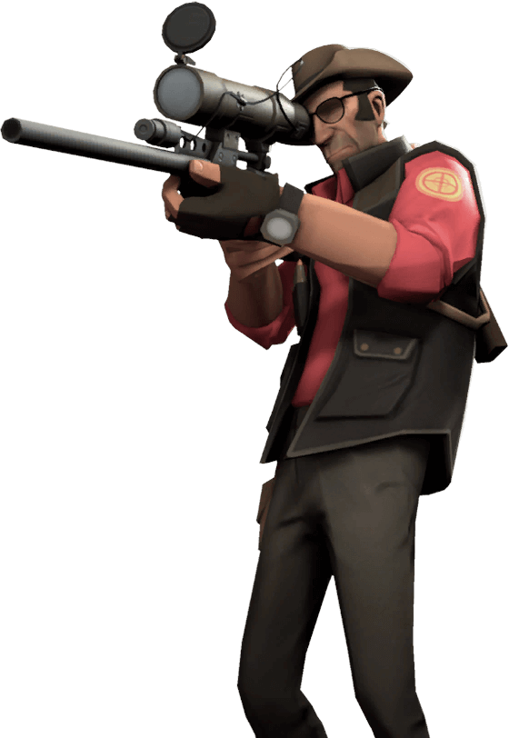
"Чувства? Знаешь у кого чувств с избытком? У психа, который может забить жену до смерти статуэткой. У профессионалов есть правила: будь вежлив, работай эффективно, имей план на каждую цель»
- Снайпер, видео «Встречайте: Снайпер».
В своей прежней жизни Снайпер, скитаясь из любви к риску по безлюдным, не прощающим ошибок австралийским пустошам, проводил месяцы, предоставленный сам себе. Длительная изоляция преподала ему ценный урок: не нужно полагаться на других, если ты никогда не промахиваешься.
Снайпер – класс, который описывать не требуется. Единственным отличием от других шутеров может стать то, что снайпер может делать дополнительный урон за счет выстрела в голову только при прицеливании. “Квикскопов” в игре нет!
Он является классом поддержки, который может устранить одну цель из далека. На киберспортивном уровне снайпер чаще появляется при ситуации ничьи или при обороне последней точки. В этих случаях его основная цель – вражеский медик.
Также, снайпер может экипировать лук со стрелами заместо винтовки. Такой стиль игры позволяет снайперу выйти на ближние дистанции к противнику. В шутку игроки называют таких снайперов «Лаксменами» (англ. “Lucksman” – скрещение слов “Luck” – удача, и “Huntsman” – название лука в игре), т.к. бывает, что им просто везет и они попадают стрелой в голову противника на другом конце карты.
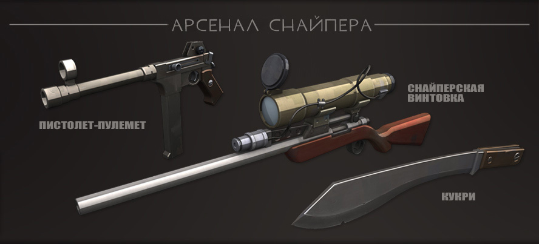
Шпион
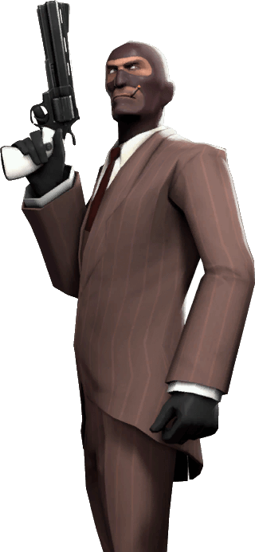
"Я отношусь к своим врагам как к своим винам: даю им подышать на воздухе... Ненадолго..."
- Шпион, реплика при старте соревновательного матча.
Он — не простой человек, покрытый загадками и тайнами, покрытый интригой и высланный в таинственное общество, и ТОЛЬКО ОГЛЯНИСЬ! — ты уже мертв. Потому что он Шпион — вездесущий убийца - покоряет сердца женщин в этом мире и отправляет врагов на "тот" свет.
Шпион, по мнению многих, самый сложный класс в освоении и развитии. С ними согласиться можно: чтобы успешно дать врагу в спину ножем нужно учитывать много факторов: нужно уметь правильно «притворяться» тем классом, за который замаскирован; нужно учитывать количество врагов, аптечек, боезапасов и проходов вокруг; и самое главное – понимать свои пределы.
Многие новички, в первый раз играя шпионом, ожидают вырезать половину команды противника за пол минуты и при этом остаться в живых. Реальность, к сожалению, сурова. Шпион не может имитировать стрельбу во время маскировки, он может только ходить: любая атака снимет маскировку. Спустя примерно 5 часов игры люди учатся распознавать шпионов: обычно это игроки, никак не атакующие и постоянно оглядывающиеся или пялящиеся на союзников.
Играя шпионом надо именно ДУМАТЬ, как шпион, и напрягать некоторые извилины в голове. К примеру, любой здравомыслящий человек заподозрит в снайпере, шатающемся посреди поля боя, шпиона, т.к. нормальные снайпера стараются забраться по выше и устранять врагов издалека.
Все эти тонкости игры за шпиона породили стереотип, что человек, играющий преимущественно за этот класс, постоянно смотрит аниме, считает себя самым умным и во всем винит во всем свою команду – в общем, эгоист.
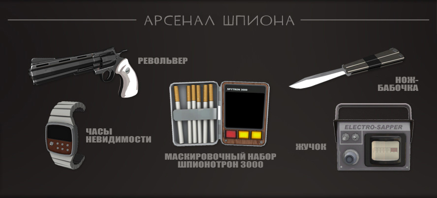